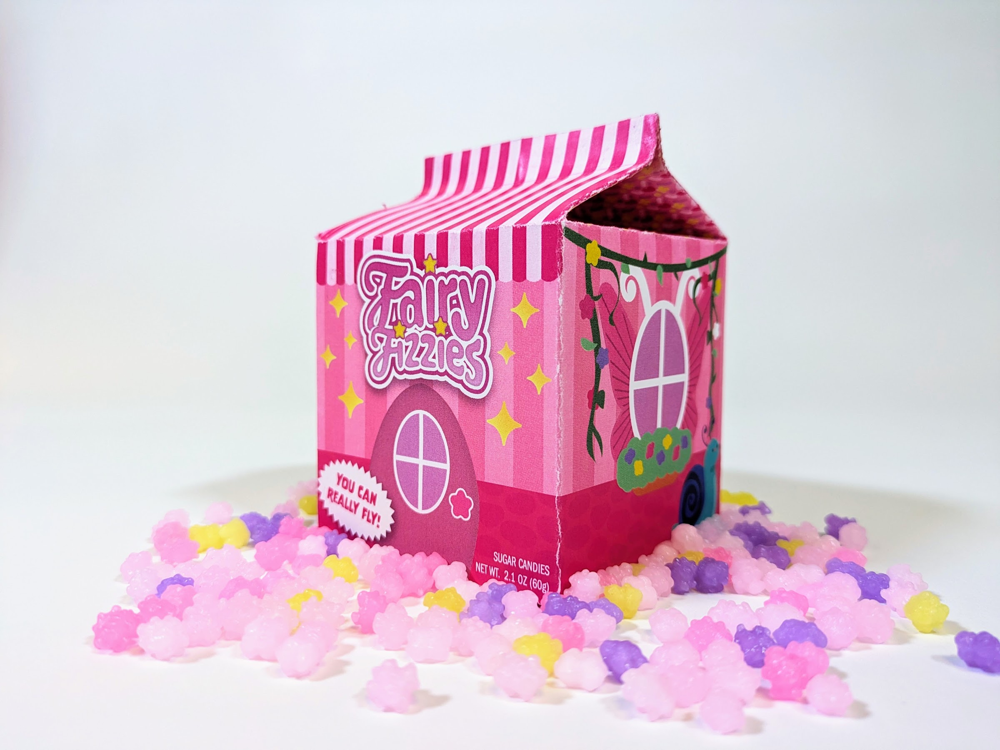
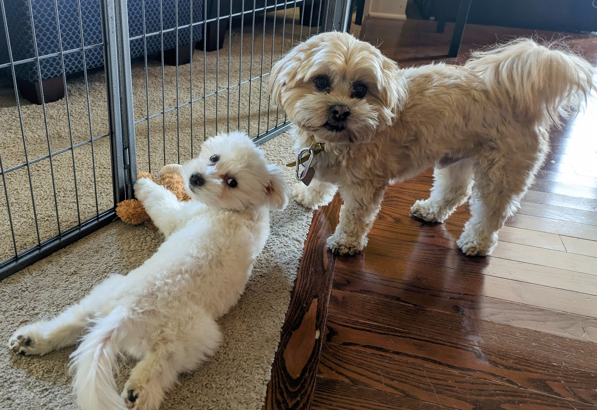

My name is Allison Downs. I'm taking this class in order to learn how to create websites and to earn my associates in graphic design. I've attempted this class before at home but found online classes did not work well for me. I'm excited for this second attempt.
I like playing games that allow me to be creative and make my own goals. Minecraft has been fun lately. I also enjoy games like Stardew Valley. In general, I just like games with low stakes.
I enjoy a lot of different types of design. Game design, UI design, graphic design are all favorites of mine. I spend a lot of time on personal projects and school projects for my graphic design degree. My most recent project was candy packaging.
I have two dogs named Kuma and Teddy. They are both Shitzu Bichon mixes and I love them dearly. Kuma is 3 and a half and Teddy is 5 months old. Teddy is still going through potty training so much of my time is spent by the back door, making sure he doesn’t make any accidents.
 McHenry County College Website